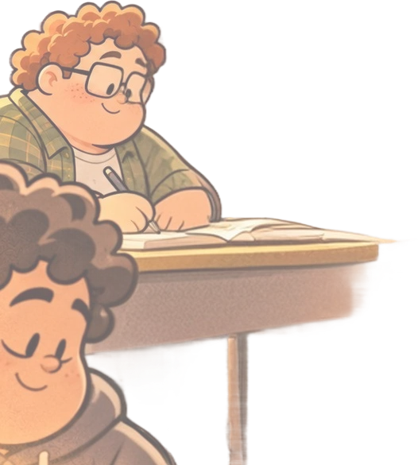
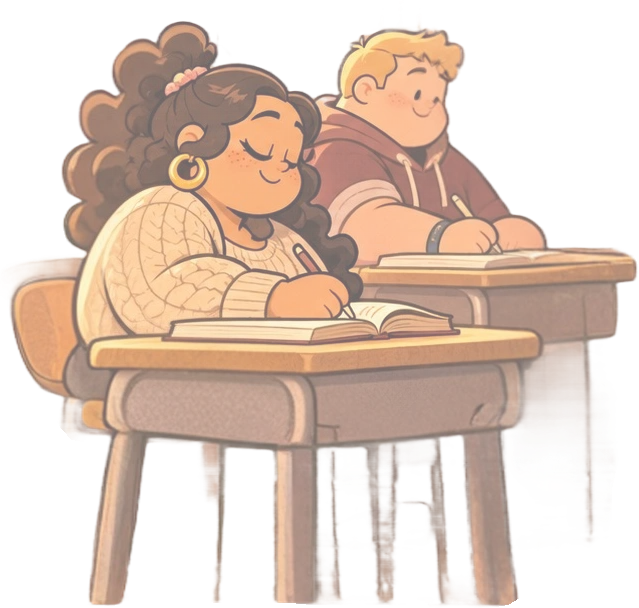
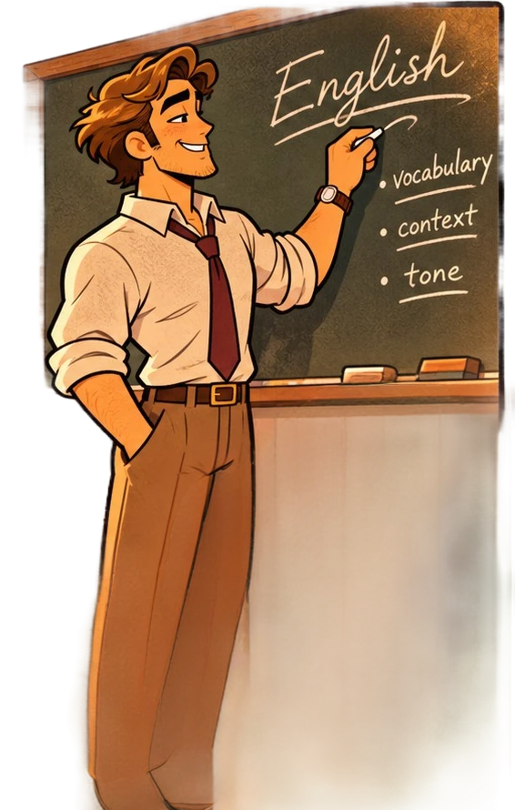
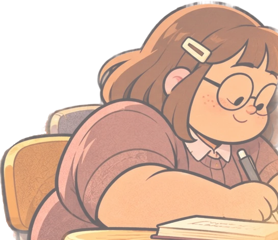
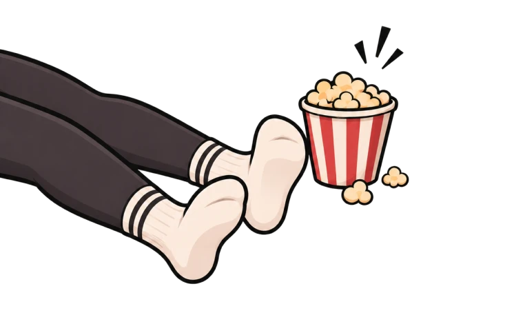
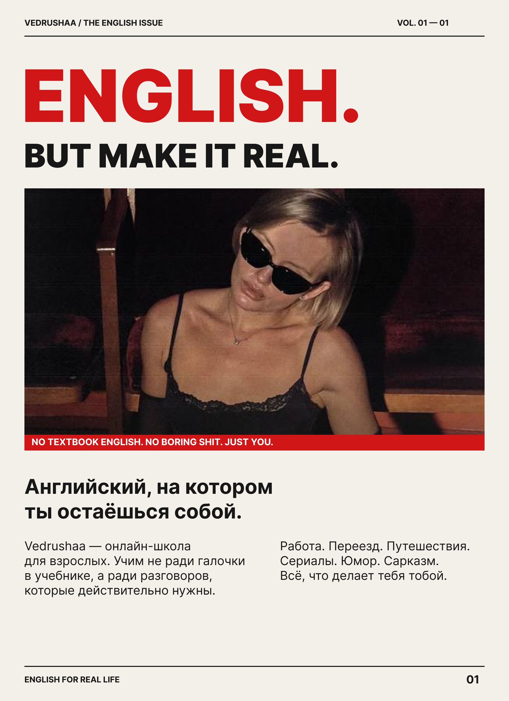
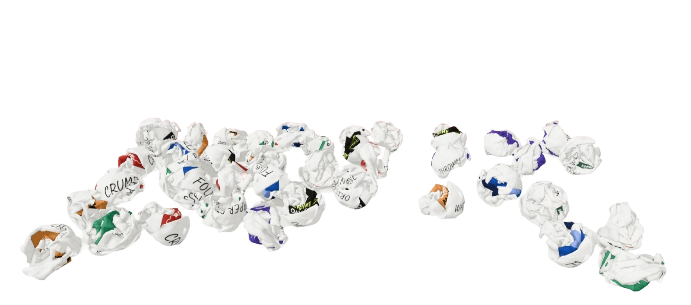
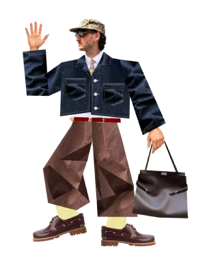

Who the fuck
is Vedrushaa?
Учу говорить так, чтобы на английском ты оставался собой. Со своим юмором, характером, сарказмом и тараканами.
Because confidence is fucking sexy.
Катя. Директриса инглиша.
16 лет в преподавании. Собственная школа. Никакой любви к скучным урокам.




Сижу на английском. В голове уже придумала, как позову его на кофе.
А что у тебя
с английским?
*Ну давай, только честно


1 / 4
На моих
уроках рот
не закрывается.
У тебя.
The best feedback
is seeing you do it
on your own.

MONEY TALKS SO WILL YOU